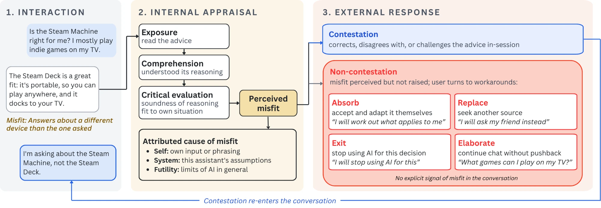

Preprint
The Evaluation–Contestation Gap: Users Rarely Contest Misfitting Conversational AI Advice and Adapt It Themselves
1New York University, Tandon School of Engineering 2Columbia University 3Augmented Human Lab, National University of Singapore
When users choose not to contest ill-fitting advice, signals of mismatch go unrecorded in conversation logs, hidden from oversight and absent from the data models learn from. Of those who rated the advice an imperfect fit, 76.2% did not contest it, including 70.0% of those who evaluated it critically. The paper terms this the evaluation–contestation gap.
Why it matters
AI chatbots have become pervasive sounding boards for personal decision-making. Conversational interfaces afford users a way to supply missing context, correct assumptions, and challenge advice as they receive it, yet conversational logs rarely show explicit user feedback or in-session correction. Because logs cannot distinguish user satisfaction from unvoiced dissatisfaction, advice that users perceive as misfitting can go undetected.

assets/projects/evaluation-contestation-gap/fig1-framework.pngPaper Fig. 1: the conceptual framework of the evaluation-contestation gap.
What the paper did
- Recall-based survey (N = 737). U.S.-based adults, each anchored to an AI advice-seeking conversation about a personal decision that they located in their own chat history.
- Research questions. (RQ1) How frequently, and in what ways, do users contest misfitting AI advice? (RQ2) Does critical evaluation of misfitting advice increase contestation behavior? (RQ3) When advice is not contested, what workarounds do users adopt, and how do they explain their silence?
- Definition. The paper defines contestation in conversational advice-seeking as direct, in-session pushback (i.e., correcting, disagreeing with, or challenging an assistant's output within the ongoing dialogue).
What the paper found
Implications for design and governance
- Elicit context rather than wait for correction. Because contestation most often supplied missing context, AI assistants can ask for that context before or alongside advice, for example by stating an assumption and asking whether it holds.
- Revise when given new information, not simply when challenged. Models can abandon correct positions when users push back without good reason. AI assistants should treat added context as information to reason with, revising advice where it changes the answer and explaining why where it does not.
- Silence is not evidence of fit. Evaluations that infer AI advice quality from the absence of complaint are likely to overstate fit and also distort it. Where fit matters, it must be measured directly.
- Audit contestation mechanisms by use. Rights to contest automated decisions are typically assessed by whether a recourse channel exists. The findings suggest also measuring what share of affected people use the channel and why others do not.